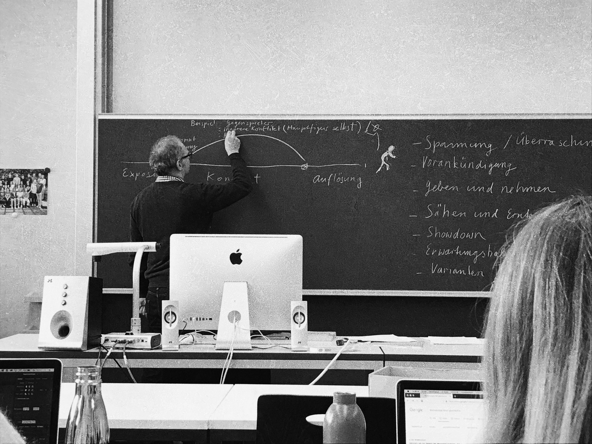

" Experimentelles Erzählen
mit Basil Vogt "
.back to
school
Eine Dokumentation von Joshua Kehrer
Zwei Jahre ist es her, seit ich das letzte mal die Schulbank drückte. Es ist ein spezielles Gefühl,
wieder in diesem Schulhaus zu sein. Denn hier verbrachte ich vier Jahre meiner Ausbildungszeit als Polydesigner 3D.
Bei der Rückkehr in diese Schule kamen somit einige Erinnerungen hervor. Ich wusste nicht was mich erwartet,
denn ich besuche nun keine Berufsschule mehr, sondern schlage einen neuen Weg ein. Eine Weiterbildung, mit welcher ich, in meiner beruflichen Laufbahn
ein neues Fenster öffnen will.
Somit nehme ich euch mit, auf meine ersten 6 Monate, zurück in der Schule.
Und damit ”back to school".
Dabei dokumentiere ich immer wieder aus dem Unterricht "Experimentelles Erzählen". Arbeiten, Ereignisse, Fortschritte, Änderungen etc.

01 _ Socken & Rauch
Gleich am ersten Tag stellte sich jeder Schüler aus der Klasse vor. Jedoch auf eine, etwas andere, Art. Jeder einzelne schrieb 1-2 Stichwörter auf einen Zettel und stellte diesen anschliessend vor sich auf den Tisch. Nun musste die Klasse und der Lehrer versuchen heraus zu finden, in welcher Verbindung diese Wörter zur betreffenden Person stehen. Der Schüler welcher sich vorstellte, musste dabei schweigen, und durfte das Ganze erst am Schluss auflösen. Meine Beiden Wörter waren "Socken & Rauch". Es wurden Ideen wie "...entwirft eigene Socken in Grau, mit dem Namen Smockey Socks" oder "....raucht aus gebrauchten Socken" etc. Die Erklärung war schlussendlich, dass ich farbige Socken sammle, bzw. eine Schwäche dafür habe und regelmässig Shisha rauche. Durch das die Wörter keine wirklichen Zusammenhänge haben, waren die anderen Schüler ziemlich verwirrt, was wiederum zu kreativen Entschlüssen führte. Im zweiten Teil teilten wir uns in kleine 3er-Gruppen auf. Die Aufgabe bestand darin, sich gegenseitig, blind, an der Hand, durch das Schulhausareal zu führen. Mit einem Druck am Handgelenk musste das geführte Team-Mitglied die Augen für 10 Sekunden die Augen öffnen und sich das Bild vor Augen merken. Dies wurde pro Person drei mal ausgeführt. Die Bilder wurden danach auf kleine Dias gezeichnet, mit welcher schlussendlich eine Kurzgeschichte / Beschreibung geschrieben werden musste. Wir entschieden uns für eine kurze, klare Beschreibung der Bilder, welche schlussendlich ein tragisches Ende zur Folge hatte.

1. Sam ist gut gelaunt
2. Er wird zu unrecht zu einer lebenslangen Haftstrafe verurteilt
3. Seine Zelle befindet sich im Hochsicherheitstrakt im Untergeschoss.
4. In seiner Zelle angekommen, werden Sam die Handschellen durch die Luke in der Türe abgenommen.
5. Er begibt sich zur Toilette.
6. Als er dabei nach oben blickt, sieht er einen Haken.Mit den Schnürsenkel seiner Schuhe erhängt er sich.
02 _ Kay & Kevin
Inzwischen vergingen wieder 2 Wochen seit des ersten Schultages. Die Klasse bekam für heute als Hausaufgabe, sich Beispiele / Ideen zu möglichen experimentellen Erzählungsarten auszudenken. Es kamen spannende Inputs aus jedem der Klasse aus welchen ein interessanter Austausch entstand. Dazu jedoch später mehr. Denn wir mussten nun, mit Hilfe von kurzen linearen Zeitungsartikel, jeweils in der Gruppe ein Spiel daraus entwickeln / konzipieren. Wir hatten 30 Minuten Zeit. Der Artikel unserer Gruppe hiess "Mutter lässt Kinder im Zug zurück". Nun gilt es, daraus ein Spiel zu kreieren. Wir entschieden uns für ein Single Player, Jump & Run - Spiel. Dazu mussten folgende Punkte beachtet werden.

03 _ Der Flohmarkt
Es ist der Start unseres Projektes. Wir gehen also auf diesen Flohmarkt auf dem Helvetiaplatz in Zürich. Dort gilt es nun, Rohmaterial zu sammeln. Um unser Projekt kurz zu erklären: Wir kreieren eine Geschichte, die der Leser durch seine Antworten auf persönliche Fragen beeinflussen kann. Die Geschichte erscheint in der Form eines interaktiven Buches. Es handelt sich dabei um ein Krimi, bei dem sich der Leser mit einem der Verbrecher identifiziert, und somit die Geschichte selbst steuern kann. Am Flohmarkt angekommen, suchen wir uns Ideen für die Geschichte raus. Die Zürcher Kantonalbank nebenan wird zum Tatort, das Kino Xenix zur Zentrale für den Hacker und das Schulhaus in der Mitte des Platzes zum Tatort für die Explosion. Mit diesen Ideen setzen wir uns nun an die Geschichte und wie wir diese in eine Verästelung umwandeln. Wir kommen gut voran und haben bis kurz vor der Mittagspause die Grundgeschichte für den Banküberfall festgelegt, damit wir nun die einzelnen, abweichenden Geschichten schreiben können. Wir einigen uns darauf, dass jeder ein Charakter übernimmt.


04 _ Geht doch / Geht nicht
Als Start in den heutigen Unterricht, fand ein Austausch in der gesamten Klasse zum Thema Pro Contra bei Geschichten statt. Jeder einzelne erzählte davon was er mag und was er weniger an Geschichten / Erzählungen mag, ob das nun Bücher, Filme oder Hörbücher sind. Es war spannend zu sehen, wie unterschiedlich die Meinungen sind. Ein grosses Thema war der Einbau von Humor / Witzen in oder ob ein Happy - End nun positiv oder negative Auswirkung auf den Zuschauer / Leser hat. Nach dem Austausch gab es einen Theorieteil bei welchem wir die Dramaturgie genauer anschauten. Unser Dozent Basil Vogt erklärte uns das Ganze anhand einer Grafik. (siehe Bild unten)

Exposition - Plotpoint / Wendepunkt - Konflikt - Auflösung
Beispiele eines Konflikt:

05 _ Helden unter sich
Bevor wir an unserer Projektarbeit weiter arbeiteten, befassten wir uns mit dem Thema "Charekteren". Der Charakter ist einer der wichtigsten Punkte in einer Geschichte. Deshalb gilt es, wichtige Punkte zu beachten.
All diese Merkmale lassen einen Charakter individuell beschreiben. Wir bildeten Gruppen und setzten uns daran, einen eigenen Sueperhelden zu entwerfen. Dazu erstellten wir eine Zeichnung welche zusammen mit dem ausgefüllten Steckbrief ein stabiles Fundament bildete. Danach wurden die Zeichnung und der Steckbrief voneinander genommen und in andere Gruppen verteilt. Diese mussten nun, anhand des Bildes, den Superhelden beschreiben oder anhand des Steckbriefs, den Superhelden zeichnen. Es war erstaunlich, dass trotz fehlenden Informationen ähnliche Beschreibungen & Skizzen gemacht wurden. Man merkte aber, dass, wenn ein wichtiges Merkmal fehlte oder zu wenig ausführlich beschrieben wurde, die Interpretation der anderen Gruppen in eine andere Richtung gingen. Schlussfazit: Es machte eine Menge Spass und es wird einem Bewusst, wie schnell etwas missverstanden wird, sobald die Kommunikation unklar ist.


06 _ Storyboards
Um unsere einzelnen Stories genauer zu definieren, haben wir sogenannte Storyboardings erstellt. Jeder einzelne definierte eins für seinen Charakter. Darin enthalten war die Uhrzeit des Geschehens, die Grafik welche gebraucht wird und wieviel Text gebraucht wird. Das ganze wurde anschliessend für die Erstellung der Grafiken, wie auch für das konzipieren des Buches / des Interfaces. Samira und Dhondup erstellten die Grafiken währenndem Sam und ich das Interface des Interaktiven Buches designen. Da uns für den heutigen Tag aber nicht viel Zeit blieb entschieden wir uns, das ganze über die Schulferien zu erledigen. Denn durch die Aufteilung der Pendenzen, funktioniert das selbsständige arbeiten zu Hause einwandfrei. Die Grafiken werden im Illsutrator gezeichnet, währenddem Sam und ich das Interface mit dem Tool "Figma" designen. Dort haben auch alle des Teams Zugriff und können die Fortschritte mitverfolgen.

07 _ Cafe Bebek
Die ersten Schulferien sind eingetreten. Da unser Projektteam aus 4 Personen besteht, konnten wir die einzelnen Arbeiten innerhalb des Projektes gut aufteilen. Damit wir jedoch alle auf dem aktuellen Stand sind, vereinbarten wir einen Termin, um die Fortschritte jedes einzelnen und allenfalls aufgetauchte Probleme und Inputs zu besprechen. Somit trafen wir uns am Samstag Vormittag zu einem Brunch im Cafe Bebek in Zürich. Das Ergebnis war sehr gut, denn wir lagen super im Zeitrahmen. Das einzige Problem was wir an diesem Tag hatten, war der Akku unserer Laptops. Weil wir uns bei dem schönen Wetter für den Aussenbereich entschieden haben, konnten wir unsere Geräte nicht aufladen. Somit war Dhondups Laptop nach 2 Stunden aus, worauf meiner 30 Minuten später folgte.Da wir jedoch gut vorwärts kamen, war das nicht so eine grosse Sache. Wir entschieden uns das Treffen langsam zu beenden und zu Hause weiter zu arbeiten. Das Fazit jedoch; Wir sind gut in der Zeit und sehr zufrieden mit dem aktuellen Stand des Projektes.


08 _ Achsensprünge
Das heutige Unterrichtsthema war "Storyboarding". Dabei ging es um die verschiedenen Ansichten und Punkte, welche man bei so einem Storyboarding einer Filmszene beachten muss. Es war sehr interessant zu sehen, wie detailliert die Filmszenen im Voraus konzipiert werden. Dinge wie Zeitdauer, Kameraführung, Verschiebung der Objekte etc. müssen genau definiert werden,
um dem Produzenten anschliessend ein klares Storyboard übergeben zu können.
Auf dem Bild sind verschiedene Aspekte zu sehen. Wie zum Beispiel:


09 _ Final Round
Heute ist die Projektabgabe. Das heisst Ende des Moduls "Experimentelles Erzählen". Doch bevor wir unser Projekt abschliessen und es den ersten Testern aushändigen, müssen wir unser Interaktives Buch noch funktionstüchtig machen. Dazu erstellen wir in Figma einen Prototypen, bei welchem wir alle Screens miteinander verknüpfen. Dies stellt sich als eine ziemliche Herausforderung dar, denn eine falsche oder fehlende Verknüpfung kann zu einem grossen Chaos werden. Damit wir uns dabei nicht gegenseitig in die Quere kommen, teilen wir uns auf. Anschliessend testen wir das Interaktive Buch und schauen wo es noch Fehler in den Verknüpfungen gibt. Jedoch haben wir diese schnell behoben. Nun ist unser Prototyp bereit für die Tests. Es wird ein Figma-Link generiert, mit welchem der Prototyp getestet werden kann. Diesen versenden wir an Freunde und Verwandte und bitten sie darum, das Interaktive Buch / den Krimi durch zu spielen / lesen.
10 _ Krönender Abschluss
Wir sind super happy mit dem Ergebnis. Ausbauen könnte man unsere Geschichte mit noch mehr Verästelungen. Zudem bekamen wir positives Feedback auf unser “Easter-Egg” welches mit einem GIF bestückt war. Das heisst man könnte auch hier noch einiges ausbauen.
Wir haben die Leser nach dem Charakter gefragt, welchen sie anhand den Fragen zugewiesen bekommen haben und meistens hat der Charakter des Lesers auf unseren Charakter gepasst. Das war sehr spannend zu sehen. Somit ist unser Ziel, 50% der Benutzer mit diesem Interaktiven Buch abzuholen, erreicht.
Ein spannendes Projekt, welches nebst Herausforderungen auch Spass mitgebracht hat.
Probiere es selber aus:
Zum Prototypen

Text...Abschluss

Joshua Kehrer
HFIAD19
18.02.2020